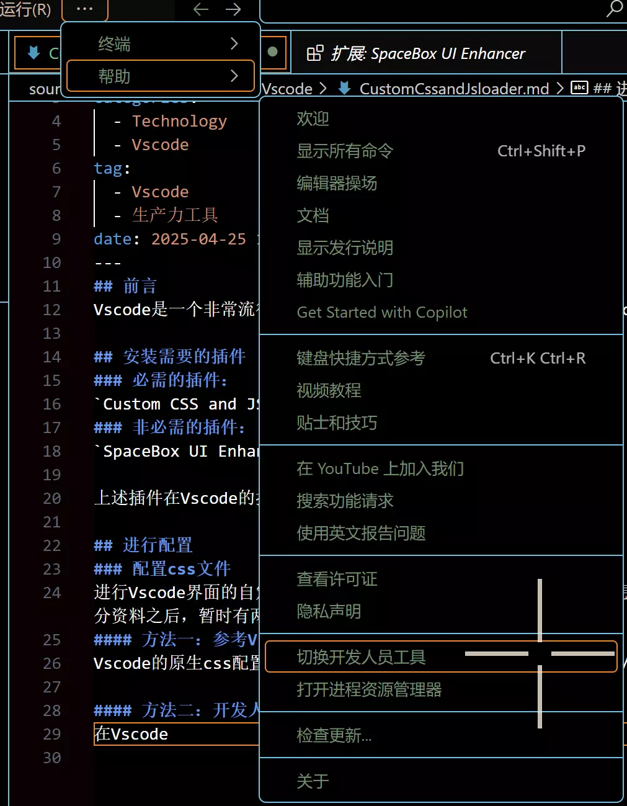
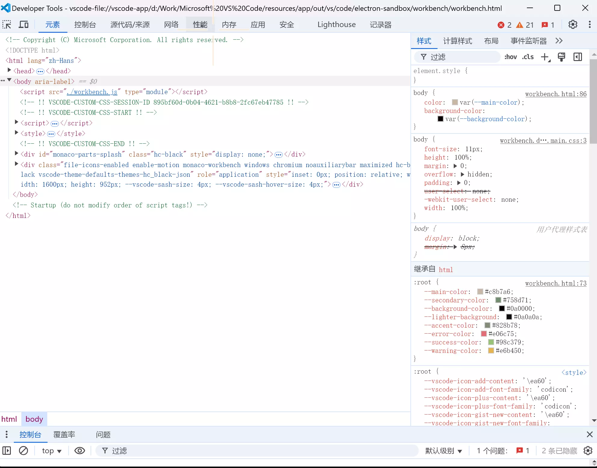

自定义Vscode界面
前言
Vscode是一个非常流行的开源编辑器，拥有一个看起来与众不同的Vscode编辑器对作者本人而言还是非常有吸引力的，这里分享一下作者的配置。
安装需要的插件
必需的插件：
Custom CSS and JS Loader
非必需的插件：
SpaceBox UI Enhancer 实现界面的动效
上述插件在Vscode的拓展部分下载之后即可使用。
进行配置
配置css文件
进行Vscode界面的自定义过程离不开css文件，这个文件指定了我们想要的样式，那么如何进行这个文件的书写呢，Custom CSS and JS Loader并没有给出答案，在查阅了部分资料之后，暂时有两种方式来完成这个部分：
方法一：参考Vscode的css文件
Vscode的原生css配置文件存在与VscodeInstallPath/resources/app/out/vs/workbench/workbench.desktop.main.css下，可以参考本文件进行自定义的格式书写。
方法二：开发人员工具
在Vscode下可以打开开发人员工具，即顶边栏找到帮助再打开切换开发人员工具即可，如下列截图所示：

此时会打开界面：

和浏览器的开发人员工具十分类似，可以通过这个工具查看元素，并进行自定义。
作者分享的配置
以下是作者自己写的一个配置文件作为参考：
/*
用到的设计元素：
莫兰迪色系：
白色类：
莫兰蒂米白色：#c8b7a6
浅绿色类：
霜封苔原：rgb(233,237,214)
初春夏田：rgb(173,194,185)
莫兰迪绿：#758d71
莫兰蒂灰绿：#828b78
莫兰迪亮绿：#b5c4b1
黑色类：
洗砚池：rgb(76,79,74)
莫兰迪黑：#0a0000
灰色类：
泥炭：rgb(133,133,140)
卡普里微风：rgb(187,184,185)
青城灰：rgb(179,179,163)
灰蓝色类：
莫兰迪灰蓝：#858fac
莫兰迪灰紫：#544e70
*/
/* 目前还在学习中，暂时先尝试更改一些简单的内容 */
/*主体背景部分，暂定使用比较黑的颜色*/
/* Custom VS Code Theme using Custom CSS and JS Loader */
:root {
/* 主色调 */
--main-color: #c8b7a6; /* 偏米色的主文字颜色 */
--secondary-color: #758d71; /* 偏绿色的辅助文字颜色 */
--background-color: #0a0000; /* 深色背景 */
--lighter-background: #0a0a0a; /* 略浅的背景 */
--accent-color: #828b78; /* 一个强调色 */
--error-color: #e06c75; /* 错误提示颜色 */
--success-color: #98c379; /* 成功提示颜色 */
--warning-color: #e6b450; /* 警告提示颜色 */
}
/* 全局设置 */
body {
color: var(--main-color);
background-color: var(--background-color);
}
/* 编辑器区域 */
.monaco-editor .margin,
.monaco-editor .content {
background-color: var(--background-color) !important; /* 编辑器背景 */
}
.monaco-editor .line-numbers {
color: #5c6370 !important; /*行号*/
}
.monaco-editor .cursor {
border-color: var(--main-color) !important; /* 光标颜色 */
}
.monaco-editor .selection {
background-color: rgba(97, 175, 239, 0.2) !important; /* 选中文字背景 */
}
.monaco-editor-background{
background-color: var(--vscode-editor-background) !important;
}
/* 代码高亮（根据需要调整）*/
.monaco-editor .mtk6 { /* 字符串 */
color: #98c379 !important; /* 继承 --success-color */
}
.monaco-editor .mtk7 { /* 数字 */
color: #d19a66 !important; /* 橙色或棕色，更柔和 */
}
.monaco-editor .mtk13 { /*注释*/
color: #6B8E23 !important; /*更加柔和的绿色*/
font-style: italic;
}
/*
.monaco-editor .mtk1 { /*关键字,如 let, const, function*/
/*color: #c678dd !important;
}
*/
.monaco-editor .mtk2{ /* 类名 */
color: var(--accent-color) !important;
}
/* UI 元素 (侧边栏，状态栏，标题栏) - 调整颜色以匹配主题 */
/* 侧边栏 */
.sidebar {
background-color: var(--lighter-background); /* 侧边栏背景 */
color: var(--main-color);
}
.sidebar .title {
color: var(--secondary-color);
}
/* 底部状态栏 */
.statusbar {
background-color: var(--lighter-background); /* 状态栏背景 */
color: var(--main-color);
border-top: 1px solid #4b5263; /* 分割线，稍微深一点 */
}
/* 标题栏 (macOS) - 可能需要根据你的系统进行调整 */
.titlebar {
background-color: var(--background-color); /*标题栏*/
color: var(--main-color);
}
/* 菜单栏 */
.menubar {
background-color: var(--lighter-background);
color: var(--main-color);
}
/* 活动栏 */
.activitybar {
background-color: var(--lighter-background);
}
/* 浮动面板 (如查找/替换) */
.monaco-find-input,
.monaco-inputbox {
background-color: var(--lighter-background) !important;
color: var(--main-color) !important;
border-color: #4b5263 !important; /* 稍微深一点的边框 */
}
/* 按钮 */
.monaco-button {
background-color: var(--accent-color) !important;
color: white !important;
}
/* 列表和树视图 Items */
.monaco-list-row {
background-color: transparent !important;
color: var(--main-color) !important;
}
.monaco-list-row.focused {
background-color: rgba(var(--accent-color-rgb), 0.1) !important; /* 蓝色半透明 */
}
.monaco-list-row.selected {
background-color: rgba(var(--accent-color-rgb), 0.2) !important; /* 突出显示选中的条目 */
}
/* 选项卡 (Tabs) */
.tabs-container {
background-color: var(--lighter-background);
}
.tab {
background-color: transparent;
color: var(--main-color);
}
.tab.active {
background-color: var(--background-color); /*活动的tab背景*/
color: var(--main-color);
border-bottom: 2px solid var(--accent-color); /*底部蓝色条表示激活状态*/
}
/* 一些常用的面板 */
/* 例如Output面板, Debug Console等等 */
.output-pane, .debug-console {
background-color: var(--background-color) !important;
color: var(--main-color) !important;
}
/* scrollbar */
.monaco-scrollable-element::-webkit-scrollbar-thumb {
background-color: #606060; /* 淡灰色 */
}
.monaco-scrollable-element::-webkit-scrollbar-track {
background-color: var(--background-color);
}
/* 示例：修改侧边栏活动栏图标 */
/* 修改 "运行和调试" 图标 */
.action-label{
color: var(--secondary-color) !important; /* 使用主题变量，例如强调色 */
}
.action-label.codicon {
color: var(--secondary-color) !important; /* 使用主题变量，例如强调色 */
}
/* 鼠标悬停时的颜色 (可选) */
.action-label.codicon:hover {
color: lighten(var(--secondary-color), 50%) !important; /* 悬停时变色 */
}
.action-label.uri-icon {
color: var(--secondary-color) !important; /* 使用主题变量，例如强调色 */
background-color: var(--secondary-color) !important;
}
/*修改顶部颜色*/
.menubar-menu-title{
color: var(--main-color) !important;
}
/*修改边框颜色*/
.monaco-sash::before{
background-color: #98c379;
background: transparent;
}
/*
.sash-container {
background: rgb(173,194,185);
}
*/
.monaco-sash.active:before,.monaco-sash.hover:before {
background: rgb(173,194,185)
}
配置样式生效
在书写完了css文件的样式之后，还需要让这个文件定义的样式生效，这时候需要打开settings.json文件，输入配置。
{% notel green Tip %} 建议在工作目录下新建一个.vscode文件夹，在其中新建一个settings.json文件，这样定义的格式只会在当前工作区生效，不会在所有的目录下都生效。
{
//如果settings.json文件中已经有内容，复制的时候，不要复制大括号，且前面的项应当添加一个逗号后再复制。
"vscode_custom_css.imports": [
"file:///Path to Your Css File" //注意这里必须要修改为你的css文件的绝对路径，要携带盘符
]
//或者可以使用作者的配置文件，作者已经把它上传到了服务器上
/*
"vscode_custom_css.imports": [
"https://www.cflmy.cn/Share/CSS/vscode.css"
]
*/
}
此时样式就可以生效了，但是由于vscode边框的配置在CSS下比较的繁琐，或者是作者没有找到合适的方式进行配置，因此这里采用了settings.json文件中配置的方式，可以按照下面的配置完成：
{
"workbench.colorTheme": "Default High Contrast",
"vscode_custom_css.imports": [
"https://www.cflmy.cn/Share/CSS/vscode.css"
],
"workbench.preferredDarkColorTheme": "Default High Contrast",
"workbench.preferredHighContrastColorTheme": "Default High Contrast",
"workbench.preferredHighContrastLightColorTheme": "Default High Contrast",
"workbench.colorCustomizations": {
"activityBar.border": "#b5c4b1", // 活动栏的边框
"sideBar.border": "#b5c4b1", // 侧边栏的边框
"editorGroup.border": "#b5c4b1", // 编辑器组的边框
"panel.border": "#b5c4b1", // 面板的边框
"titleBar.border": "#b5c4b1", // 标题栏的边框
"statusBar.border": "#b5c4b1", // 状态栏的边框
"editor.border": "#b5c4b1", // 编辑器的边框
"editorSuggestWidget.border": "#b5c4b1", // 建议窗口的边框
"editorHoverWidget.border": "#b5c4b1", // 悬停窗口的边框
"editorWidget.border": "#b5c4b1", // 编辑器小部件的边框
"debugToolBar.border": "#b5c4b1", // 调试工具条的边框
"notifications.border": "#b5c4b1", // 通知边框
"panelTitle.border": "#b5c4b1", // 面板标题的边框
"panelSection.border": "#b5c4b1" , // 面板部分的边框
// 基础边框
"focusBorder": "#4c803e", // 当前获得焦点的元素的边框
// 活动栏
//"activityBarBadge.background": "#b5c4b1", // 活动栏徽章背景色（也可能影响周围）
//这个部分不美观，去掉了
// 侧边栏
"sideBarSectionHeader.border": "#b5c4b1", // 侧边栏 section header 的底部边框
"sideBarTitle.border": "#b5c4b1", // 侧边栏标题的边框
// 编辑器
"editorOverviewRuler.border": "#b5c4b1", // 编辑器概览标尺的边框
"editorGroupHeader.border": "#b5c4b1", // 编辑器组头部的边框
"editorLineNumber.border": "#b5c4b1", //编辑器行号的边框
// 标签页
"tab.border": "#b5c4b1", // 标签页的边框
"tab.activeBorder": "#b5c4b1", // 激活标签页底部的边框
"tab.inactiveBorder": "#b5c4b1", // 非激活标签页底部的边框
"tab.activeBorderTop": "#b5c4b1", // 激活标签页顶部的边框
"tab.inactiveBorderTop": "#b5c4b1", // 非激活标签页顶部的边框
// 面板
"panelSectionHeader.border": "#b5c4b1", // 面板区段头部的底部边框
// 视图
"list.focusOutline": "#b5c4b1", // 列表获取焦点时的外轮廓线
"list.hoverOutline": "#b5c4b1", // 列表悬停时的外轮廓线
// 按钮，输入框等控件
"button.border": "#b5c4b1", // 按钮边框
"input.border": "#b5c4b1", // 输入框边框
"dropdown.border": "#b5c4b1", // 下拉菜单边框
"scrollbar.shadow": "#b5c4b1", // 滚动条阴影（可能看起来像边框）
"menu.border": "#b5c4b1", // 菜单边框
"menu.selectionBorder": "#b5c4b1", // 菜单选择项边框
"peekView.border": "#b5c4b1", // 查看结果窗口的边框
//调试相关
"debugExceptionWidget.border": "#b5c4b1",//调试异常窗口的边框
"debugIcon.breakpointForeground": "#b5c4b1" //设置断点图标前景色（可能影响其边框外观）
}
}
该配置文件作者也已经上传到了服务器中，可以通过以下链接下载： Vscode界面配置json文件下载
在进行完上述操作之后，保存文件，之后使用Ctrl + Shift + P并键入Reload Custom CSS and JS点击加载我们定义的文件
可选配置
可以利用SpaceBox UI Enhancer 实现界面的动效
使用Ctrl + Shift + P并键入SpaceBox Enable UI Enhancer点击即可开启。
同样的如果不喜欢界面动效，使用Ctrl + Shift + P并键入SpaceBox Disable UI Enhancer即可关闭。
后记
对于这个配置，作者还是使用的不太熟练，所以还需要使用json进行一些样式的配置，未来或许会尝试不借助json来独立完成样式的配置。